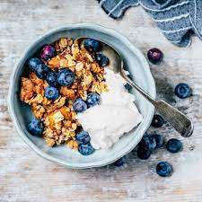

Smoothies
Smoothies are great ways to get your fruit and vegetables into you daily diet. They're even better when you add in vitamin and protein supplements. Try one today to help replace you vital nutrients and to cool off after an intense workout
| Tropical Splash | Strawberry, Watermelon, Pineaple, 1 Boost | $4.00 |
|---|---|---|
| Smooth Sunset | Orange, Peach, Strawberry, 1 Boost | $4.000 |
| Bright Sunrise | Banana, Pineaple, Watermelon, 1 Boost | $4.00 |
| Protein | Helps repair muscles |
|---|---|
| Vitamin B | Provides energy for day | Vitamin C | Supports immune system |
Order a Smoothie!
Meals
Blueberries and Cereal with Yogurt
↓scroll down for benefits and recipe↓
Step 1. Empty one 6 oz. carton of non-fat plain Greek yogurt into a small to medium sized bowl.
Step 2. Add 1/4 tsp. to 1/2 tsp. of liquid (oat milk, soy milk, or cows milk) to thin. Optionally, add 4-7 drops of liquid Stevia if you're not fond of plain yogurt's rather sour taste. Stir well.
Step 3. Add 1/4 cup or 1/3 cup old fashioned whole grain oats and stir well.
Step 4. Finish by adding about 1/4 cup of fresh blueberries or frozen blueberries, and stir well. Sprinkle with cinnamon if desired.
Yogurt - Non-fat plain Greek yogurt is low is sugar and sodium, but especially high in protein and calcium.
And yogurt contains active cultures—good bacteria— which our digestive tract depends on for healthy digestion. Though dairy is avoided by many vegetarians and those following a strict plant-based diet, many do include non-fat, plain, organic yogurt due to its live cultures, protein, and calcium.
Oatmeal - Oats are healthy for us. Quaker Old Fashioned Oats (Organic, Non GMO), my favorite, contains 3 grams of fiber, plant-protein, minerals, and no sodium. Oats can lower harmful LDL cholesterol as explained by Harvard Medical School.
Are raw oats safe to eat? Yes, if they're rolled oats, which is what you commonly find in grocery stores, and available as old-fashioned oats, steel-cut oats, or quick-cooking 1-minute oats. University of Wisconsin explains that rolled oats are oat groats that have been dehusked, steamed (destroying pathogens), and rolled into flakes.
Blueberries - Blueberries are one of the healthiest fruits on the planet. They contain fiber and are loaded with antioxidant vitamins and minerals. Blueberries may help protect the body from cancer, heart disease, and inflammation, and have other health benefits as discussed in Mayo Clinic's The Power of Blueberries.
Sweet Potato Avocado Toasts With Walnuts

↓scroll down for benefits and recipe↓
1) Slice a small plank off one side of each sweet potato lengthwise. This will act as a base, so you can cut the sweet potato into toast slices easily. Prop the sweet potato on the flat side you created and slice each potato into planks about ¼ inch thick.
2) For toaster preparation, pop the sweet potato planks in the toaster and toast until tender. This may take a few times, depending on your toaster.
3) For oven preparation, preheat your oven to 350° F. Lay the sweet potato planks on a baking sheet and spray with cooking spray. Roast for 6-7 minutes per side, until they are easily pierced with a fork.
4) When they’re done toasting, lay the sweet potato toasts on plates and top with sliced avocado. Mash the avocado gently with a fork. Sprinkle with diced walnuts, red pepper flakes and drizzle with olive oil. Top with flaky salt.
Swap traditional bread for sweet potato slices for this gluten-free take on classic avocado toast. Diced walnuts offer some added crunch while red pepper flakes kick things up with a little heat.
Berry Cream Cheese Pastries

↓scroll down for benefits and recipe↓
Preheat oven to 425F.
Roll out puff pastry dough. Using a heart shaped cookie cutter, cut out several hearts. Place the cut outs on 2 large baking sheets lined with parchment paper.
Once all of the cut outs have been placed on the baking sheets, combine the leftover dough and roll out in a ball, before rolling out into a large rectangle. Use the remaining dough to create more heart cut outs and place on the baking sheets.
Spread each heart cut out with cream cheese, leaving a small ¼ inch border.
Top each heart cut out with chopped raspberries.
Using a pastry brush, brush the borders of the heart cut outs with the beaten egg.
Place the baking sheets in the oven for 15 minutes.